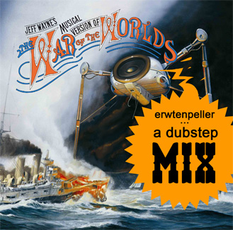

➫
2012-12-31
warp
Yes, it's december already. Time for pointless "Best of 2012"
lists of video games, music, and more such nonsense. Here is a
list of albums I particularly enjoyed in 2012, ordered by
release date (though I include a couple of albums released
before 2012 which I discovered this year).

2012-01-06
Kubus &
Sticks
Microphone Colossus 2
A free downloadable album only 24 minutes long? That sounds
like a quick side project, and yet it turned out to be the most
interesting release out of the dutch hiphop scene this year.
Sticks clearly feels at home on Kubus' electronic beats, which
makes this a joy to listen to.

2012-01-24
Ana Tijoux
La Bala
While looking for resources to learn spanish I came across Ana
Tijoux, who released "La Bala" this year. Parts of La Bala do
not sound like hip hop at all, a large chunk of the album is
sounds very calm and relaxed. It suits Ana's voice, but I think
I prefer the proper hip hop beats of her previous solo album,
1977. One song on La Bala stands out, "Shock" is very powerful,
especially if you see the accompanying video.

2012-01-27
Kapabel
De Avonduren
A dutch "hiphop" album with stories and fairy tales told through
rap and spoken word. The accompanying music sounds more like
jazz and funk than hiphop beats. A beautiful album, but listen
to it as you would an audio book.
2012-05-01
J Alvarez
Otro nivel de música reloaded
2012 is the year that I discovered reggaeton. It rivals
eurobeat for being the worst genre ever. But, uptempo
repetitive music is great background music for programming. My
favourite artist is J Alvarez, four albums so far which
all sound exactly the same — good stuff.
2012-05-14
Squarepusher
Ufabulum
This is a great album, but I haven't listened to it as much as I
expected. This kind of electronica isn't suitable anymore as
background music when working, I guess it needs a bit more focus
to appreciate it. Overall Ufabulum sounds like familiar,
fast-paced Squarepusher stuff, though some of the sounds do
remind me of his Shobaleader One album.
2012-06-05
Chiptunes = WIN \m|♥|m/
One of two massive compilations I listened to this year. A few
tracks just are not chiptunes, but in general this is a great
collection of tracks — but can you survive three hours of
chiptunes in one sitting? :)
2012-07-01
EE Compilation
I generally listen to an album from start to finish, but that is
a challenge with this compilation as it is almost 6 hours long!
I'm not sure if I've ever made it to the end, I feel sorry for
the artists who ended up at the end of this release, I may never
get to their tracks. If you've never heard of electronic
explorations, check out the podcast
at electronicexplorations.org.
2012-09-12
Perfume Global Compilation “LOVE THE WORLD”
I love "FAKE IT", when I first listened to it it just seemed to
drone on endlessly with barely any change to the rythm and pitch
of the vocals. Perfume provides a refreshingly electronic flavour
which I have not heard in other j-pop.
2012-09-19
Final Fantasy VIII Chips
As part of the Final Fantasy 25th Anniversary celebrations
Square Enix has released five albums with chiptune remakes of
tracks from the Final Fantasy games. Out of the five (VII,
VIII, IX, X, XI) albums my favourite is probably VIII.

2009-10-22
erwtenpeller
War of the Worlds (a dubstep mix)
I grew up with Jeff Wayne's War of the Worlds, after two decades
of listening to it with some frequency I am quite familiar with
it. And that may be a prerequisite for appreciating this mix.
When you consider only its parts, this is simply a DJ Mix of
dubstep music with some samples from "War of the Worlds" thrown
in. But the outcome is surprisingly effective, I downloaded
this because it seemed like an interesting novelty, but I ended
up listening to it a great deal.
2010-12-03
deaudmau5
4x4=12
Obviously deadmau5 is a fairly well-known name, however I never
listened to any of his music until this year. Friendly,
predictable house music, good for coding.
2011-04-15
Scar Symmetry
The Unseen Empire
I haven't listened to much metal this year, but I did catch up
on what Scar Symmetry have been doing in recent years.
Apparantly the music on Unseen Empire consists of ideas from a
whole a bunch of metal genres, but I don't know anything about
metal, so I don't notice any of that. I just come here for the
nice contrast between the singing and growling, which is still
as much a feature here as it was on their first two albums.